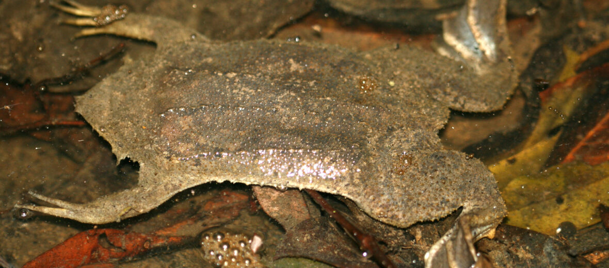

As ANY SANE PERSON would agree, frogs are truly beautiful and majestic creatures.
They come in many shapes and forms and are my absolute faves of the animal Kingdom <3
Through this page I aim to analyse and document some particularly interesting specimens and get the deets for myself
And before you ask, yes these are in order of how cool I think they are :p (But not yet tho cos I haven't got around to it yet!)
Toads and other like ampibia are more than welcome here too!
SRAWBERRY POISON-DART FROG - Oophaga Pumilio
My FAVOURITE of all the froggies! This little guy is known for its red colour, distinctive black, strawberry-like, spots, and 'blue jeans'.
RED-EYED TREE FROG - Agalychnis Callidryas
These magnificent frogs are easily recognisable for their captivating scarlet eyes.
TOMATO FROG - Dyscophus Antongilii
PURPLE FROG - Nasikabatrachus Sahyadrensis
GOLDEN TOAD - Incilius Periglenes
NORTHERN GLASS FROG - Hyalinobatrachium Fleischmanni
LEMUR LEAF FROG - Agalychnis Lemur
POLKA-DOT TREE FROG - Hypsiboas Punctatus
MORELET'S TREE FROG - Agalychnis Moreletii
AUSTRALIAN GREEN TREE FROG - Ranoidea Caerulea

Also known as White's Tree Frog
EUROPEAN TREE FROG - Hyla Arborea
COMMON COQUÍ - Eleutherodactylus Coqui
HARLEQUIN POISON FROG - Oophaga Histrionica
LITTLE DEVIL POISON FROG - Oophaga Sylvatica
GOLDEN DART FROG - Phyllobates Terribilis
HULA PAINTED FROG - Latonia Nigriventer
CANE TOAD - Rhinella Marina
PUMPKIN TOADLET - Brachycephalus Ephippium
These little cuties grow to a whopping 1.2-1.9cm as adults!
ARGENTINE HORNED FROG - Ceratophrys Ornata
SURINAM HORNED FROG - Ceratophrys Cornuta
AMERICAN BULLFROG - Lithobates Catesbeianus
INDIAN BULLFROG - Hoplobatrachus Tigerinus
DESERT RAIN FROG - Breviceps Macrops
SURINAM TOAD - Pipa Pipa

VIETNAMESE MOSSY FROG - Theloderma Corticale
MISSION GOLDEN-EYED TREE FROG - Trachycephalus Resinifictrix
COMMON FROG - Rana Temporaria
ZAIRE DWARF CLAWED FROG - Hymenochirus Boettgeri
DYEING POISON DART FROG - Dendrobates Tinctorius
Various Charts and Such:
The various patternings of Oophaga